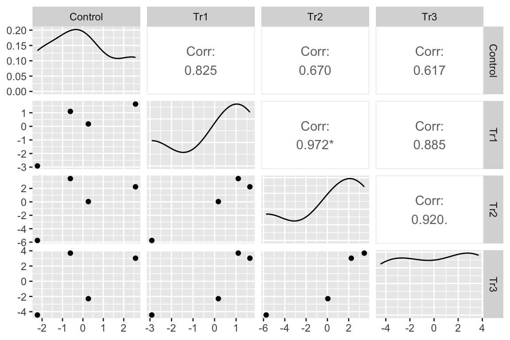

16.6 Example 1 – A random intercepts and slopes explainer (demo1)
To introduce linear mixed models, I’m using data from Experiment 1g below. The design is \(2 \times 2\) factorial with 4-5 mice per treatment combination. To simplify the explanation of random intercepts and random slopes in linear models with added random factors (linear mixed models), I flatten the analysis to a single treatment factor (\(\texttt{treatment}\)) with four levels (“Control”, “Tr1”, “Tr2”, “Tr3). The response is percent germinal centers (\(\texttt{gc}\)) in secondary lymphoid tissue. The experiment was replicated 4 times. Each replication is a batch. This batch information is in the variable \(\texttt{experiment_id}\). Further detail isn’t necessary at this point.
Figure 16.3A is a response plot of the linear model lm(gc ~ treatment) fit to the whole data set, ignoring the fact that the data were collected in batches. This is the complete pooling fit. Figure 16.3B is a response plot of the linear model lm(gc ~ treatment) fit to the means of each treatment combination from each experiment. This is the means pooling fit.
Figure 16.3: A. Response plot of the linear model gc ~ treatment fit to all exp1g data. B. Response plot of the linear model gc ~ treatment fit to the experiment means of the exp1g data.
16.6.1 Batched measurements result in clustered residuals
Figure 16.4A is a plot of the residuals of the complete-pooling fit against \(\texttt{experiment_id}\). The residuals are clustered by experiment. All residuals from experiment 1 are positive. All residuals from experiment 2 are negative. Residuals from experiment 3 are generally positive. Residuals from experiment 4 seem pretty random. This clustering by experiment is the same in the plot of the residuals of the means-pooling fit against \(\texttt{experiment_id}\) (Figure 16.4B). The residuals are not independent in either fit. If you asked me to guess the sign of a residual and gave me the information that the measure was from experiment 1, I’d be correct 100% of the time. If the residuals were independent, I’d be correct, on average, 50% of the time. Independent residuals are randomly scattered about zero for within each experiment (Figure 16.4C).
Figure 16.4: A. Residuals of the model fit to all demo1 data. B. Residuals of the model fit to the mean demo1 data.
16.6.2 Clustered residuals result in correlated error
An assumption of inference from a linear model is independence – each response is independently drawn from a distribution of random values. In Experiment 1g, the experiments are batches and the batched data results in correlated error unless modeled. One way to see this correlated error is to use the residuals from the means-pooled fit.
- aggregate the data by computing the means for each treatment level within each experiment.
- fit the fixed effect model (the model without added random factors) to the aggregated data
- compute the residuals from the model
- cast (or spread) the residuals for each treatment into its own column. This creates a 4 rows (experiment) \(\times\) 4 columns (treatments) matrix of residuals.
- Compute the correlations among the four treatment combination columns. This is the correlated error due to the batch effect of \(\texttt{experiment_id}\).
| experiment_id | Control | Tr1 | Tr2 | Tr3 |
|---|---|---|---|---|
| exp_1 | 2.578125 | 1.64075 | 2.2425 | 3.027125 |
| exp_2 | -2.229375 | -2.91625 | -5.7475 | -4.435375 |
| exp_3 | -0.615375 | 1.09975 | 3.4625 | 3.697125 |
| exp_4 | 0.266625 | 0.17575 | 0.0425 | -2.288875 |

I’ve used GGally::ggpairs to compute and display the correlations as a matrix. The lower triangle of matrix elements contains the scatterplot of the residuals for the treatment combination defined by the row and column headers. The upper triangle of elements contains the Pearson correlation. With only four experiment residuals per treatment combination, large correlations will be common. But all correlations are large, positive values. The asterisks indicate values that would be an unexpected surprise under a null model of no correlation.
We could explicitly model correlated error with a linear model for correlated error using the nlme::gls function, using a model for the correlated error that matches our knowledge of how the data were generated (from experiment batches). In this chapter, we implicitly model the correlated error using a linear model with added random factors – a linear mixed model. What we explicitly model in a linear mixed model is hierarchical levels of variance.
16.6.3 In blocked designs, clustered residuals adds a variance component that masks treatment effects
The variance among the experiments within a treatment is much greater than the variance among the treatment means. A consequence of this is, the experiment effect masks the effect of treatment. We can manually unmask this by
- compute the experiment means across all treatment combinations.
- create a gc variable without variation among experiment means (“adjusted for experiment_id”).
Figure 16.5: Adjusting for variance among experiments. The black, dashed line is the grand-mean response. In the left panel, the colored, dashed lines are the mean gc for each experiment, ignoring treatment. In the right panel, the individual values have been shifted (adjusted) by centering the experiment means. This has the effect of reducing the error variance – the spread of the values around the treatment means (large black dots).
In Figure 16.5, the black dots are the modeled means of each treatment combination. The small colored dots are the measured values of the response for each \(\texttt{experiment_id}\) in the left panel and the experiment-adjusted values in the right panel. The black, dashed line is the grand-mean response. The colored, dashed lines are the means of all responses in each experiment. These means are equal in the right panel (and covered by the black line) because the variation among the means has been adjusted away. What is left is error variation uncontaminated by \(\texttt{experiment_id}\).
In Experiment 1g, \(\texttt{experiment_id}\) is a nuissance variable – it adds to the noise. In the exercise above, the effects of the treatment variables are adjusted for the elevation of batch effects on the overal batch mean. Linear mixed models are more sophisticated than this. In a linear mixed model, the effects of the treatment variables are adjusted for the elevations of batch effects on the intercept and batch effects on the slopes (or some combination of these). These are the random intercepts and random slopes.
16.6.4 Linear mixed models are linear models with added random factors
A linear model adds some combination of random intercepts and random slopes to a linear model.
\[ \begin{equation} \texttt{gc}_{jk} = (\beta_{0} + \gamma_{0j}) + (\beta_{k} + \gamma_{kj}) \texttt{treatment}_{k} + \varepsilon \tag{16.1} \end{equation} \]
A random intercept for experiment j is the sum of the fixed intercept (\(\beta_0\)) and a random intercept effect (\(\gamma_{0j}\)). I’ve embedded these within parentheses to show how these combine into the random intercept. A random slope for batch j is the sum of the fixed slope (\(\beta_k\)) for the non-reference level \(k\) and a random slope effect (\(\gamma_{kj}\)). I’ve embedded these within parentheses to show how these combine into the random slopes.
There is a different \(\gamma_{0j}\) for each experiment. There is a different \(\gamma_{kj}\) for each combination of non-reference level and experiment. The \(\gamma_0j\) and \(\gamma_kj\) are modeled as if the values for each experiment is a random draw from an infinite number of experiments. This is why \(\gamma_{0j}\) and \(\gamma_{kj}\) are random effects. In contrast, \(\beta_0\) and the three \(\beta_k\) for the non-reference treatment levels are the same for all experiments – this is why \(\beta_0\) is known as fixed effects (technically, \(\beta_0\) is a mean and not an effect).
Model (16.1) is fit to the Example 1 data using lme4::lmer()
Notes
(treatment | experiment_id)specifies a random intercept for all levels of \(\texttt{experiment_id}\) and a random slope for all combinations the levels of \(\texttt{experiment_id}\) and the non-reference levels of \(\texttt{treatment}\)
16.6.5 What the random effects are
Random intercepts model batch effects in the reference treatment level. 16.6A illustrates random intercepts and random intercept effects. The large, colored dots are the modeled means of each experiment for each treatment combination. For the reference treatment level (“Control”), each mean is the sum of the estimated fixed intercept (\(b_0\)), shown by the dashed gray line, and the estimated random intercept effect (\(g_{0j}\)) for experiment j. The random intercept effects are the vertical, colored lines.
Random slopes model the effect of treatment on batch effects in the non-reference treatment levels. 16.6B illustrates random slopes and random slope effects, focusing on the slopes for the 2nd non-reference treatment level (“Tr2”). The angled black line is the estimated fixed slope \(b_2\) for this level. The colored lines are the random slopes for each experiment. The pale, gray dots are where the modeled means at the Tr2 level would be if there were no random slope effect – as if we took the large colored dots at “Control” and rigidly shifted them up the black line to “Tr2”. The estimated random slope effects \(\mathrm{g}_{2j}\) are the difference between these large, gray dots and the modeled means.
![What random intercepts and slopes are. (A) A random intercept for batch $j$ is the difference between the fixed intercept and the modeled mean for batch $j$ in the reference treatment level. The random intercepts for experiments 1 ($\mathrm{g}_{0.1}$) and 2 ($\mathrm{g}_{0.2}$) are shown with brackets. (B) The fixed slope for the "Tr2" is illustrated with a bracket. The large, grey dots are the expected values for each batch (experiment_id) in the "Tr2" treatment if the random slope effects are zero. A random slope for batch $j$ is the difference between the expected value for batch j and the modeled mean for batch $j$. The random slope for experiment 2 in "Tr2" ($\mathrm{g}_{2.2}$) is shown with a bracket.](Walker-elementary-statistical-modeling-draft_files/figure-html/lmm-demo1-explainer-2c-1.png)
Figure 16.6: What random intercepts and slopes are. (A) A random intercept for batch \(j\) is the difference between the fixed intercept and the modeled mean for batch \(j\) in the reference treatment level. The random intercepts for experiments 1 (\(\mathrm{g}_{0.1}\)) and 2 (\(\mathrm{g}_{0.2}\)) are shown with brackets. (B) The fixed slope for the “Tr2” is illustrated with a bracket. The large, grey dots are the expected values for each batch (experiment_id) in the “Tr2” treatment if the random slope effects are zero. A random slope for batch \(j\) is the difference between the expected value for batch j and the modeled mean for batch \(j\). The random slope for experiment 2 in “Tr2” (\(\mathrm{g}_{2.2}\)) is shown with a bracket.
16.6.6 In a blocked design, a linear model with added random effects increases precision of treatment effects
\[ \begin{equation} \texttt{gc}_{jk} = \beta_{0} + \beta_{k} \texttt{treatment}_{k} + (\gamma_{0j} + \gamma_{kj}\texttt{treatment}_{k} + \varepsilon) \tag{16.2} \end{equation} \]
If the random intercepts and random slopes aren’t modeled, this among-experiment variance is shifted to the error variance because the intercept effects and slope effects aren’t estimated but absorbed by the error – everything in Model (16.2) will be estimated by the residuals. As a consequence, the estimate of \(\sigma\) (the square root of the error variance) for the linear mixed model is smaller than that for the linear model with only fixed effects.
# sigma for the lmm
m1 <- lmer(gc ~ treatment +
(treatment | experiment_id),
data = demo1)
summary(m1)$sigma## [1] 1.931339## [1] 3.376402The consequence of the smaller estimate of \(\sigma\) in the linear mixed model on inference (confidence intervals and p-values) depends on the number of subsamples, the variance of the random effects relative to the variance of the residual error, and the correlation among the random effects.
16.6.7 The correlation among random intercepts and slopes
Again, here is the linear mixed model fit to the experiment 1g data.
\[ \begin{equation} \texttt{gc}_{jk} = (\beta_{0} + \gamma_{0j}) + (\beta_{k} + \gamma_{kj}) \texttt{treatment}_{k} + \varepsilon \end{equation} \]
Think about how this model generates data. We have four experiments, so we randomly draw four \(\gamma_{0j}\) from a normal distribution with some variance \(\sigma_{0}^2\). And, for each non-reference treatment, we randomly draw four \(\gamma_{0k}\) from a normal distribution with some variance \(\sigma_{k}^2\). This gives us a matrix of four columns (one random intercept and three random slopes) and four rows (four experiments).
| intercept | slope 1 | slope 2 | slope 3 |
|---|---|---|---|
| \(\gamma_{0.1}\) | \(\gamma_{1.1}\) | \(\gamma_{2.1}\) | \(\gamma_{3.1}\) |
| \(\gamma_{0.2}\) | \(\gamma_{1.2}\) | \(\gamma_{2.2}\) | \(\gamma_{3.2}\) |
| \(\gamma_{0.3}\) | \(\gamma_{1.3}\) | \(\gamma_{2.3}\) | \(\gamma_{3.3}\) |
| \(\gamma_{0.4}\) | \(\gamma_{1.4}\) | \(\gamma_{2.4}\) | \(\gamma_{3.4}\) |
To randomly sample these values, the model needs not only the variances (\(\sigma_k^2\)) for each column (random effect) but also a correlation for each pair of columns. These correlations are the off-diagonal elements of the correlation matrix of random effects.
| 1 | COR(\(\gamma_{0}\), \(\gamma_{1}\)) | COR(\(\gamma_{0}\), \(\gamma_{2}\)) | COR(\(\gamma_{0}\), \(\gamma_{3}\)) |
| COR(\(\gamma_{1}\), \(\gamma_{0}\)) | 1 | COR(\(\gamma_{1}\), \(\gamma_{2}\)) | COR(\(\gamma_{1}\), \(\gamma_{3}\)) |
| COR(\(\gamma_{2}\), \(\gamma_{0}\)) | COR(\(\gamma_{2}\), \(\gamma_{1}\)) | 1 | COR(\(\gamma_{2}\), \(\gamma_{3}\)) |
| COR(\(\gamma_{3}\), \(\gamma_{0}\)) | COR(\(\gamma_{3}\), \(\gamma_{1}\)) | COR(\(\gamma_{3}\), \(\gamma_{2}\)) | 1 |
In the models fit in this text, a researcher doesn’t specify these variances and correlations. Instead, these are parameters estimated by the model. Here is a summary of the estimates of the variances of the random effects and of the correlations among the random effects for the linear mixed model fit to the experiment 1g data.
## Groups Name Std.Dev. Corr
## experiment_id (Intercept) 1.7710
## treatmentTr1 0.9642 -0.025
## treatmentTr2 2.9026 0.458 0.876
## treatmentTr3 2.9910 0.300 0.879 0.938
## Residual 1.9313The first four values in the column “Std.Dev.” are the square roots of the estimated variances for the random effects given in the column “Name”. The last value in column “Std.Dev.” is the square roots of the estimate of \(\sigma^2\) (the error variance). The (lower) triangular matrix of values under “Corr” are the estimates of the correlations among the random effects. The variance of the random effects and the correlation among the random effects creates the correlated error described above but do not confuse these different correlations (this is easy to confuse, you are not alone).
A compact way to view these variances and correlations is a matrix with the random effect standard deviations on the diagonal and the correlations on the off-diagonal. I’ll refer to this as the VarCorr matrix after the lme4 function used to get the values.
| (Intercept) | 1.77 | |||
| treatmentTr1 | -0.03 | 0.96 | ||
| treatmentTr2 | 0.46 | 0.88 | 2.90 | |
| treatmentTr3 | 0.30 | 0.88 | 0.94 | 2.99 |
It’s probably not worth trying to understand the experimental reason underneath the correlations among the random effects. But, researchers might want to sleuth out why a lab is getting high random intercept and slope variances, relative to the error variances, as these could indicate potential sources of improvement in lab protocols.
16.6.8 Clustered residuals create heterogeneity among treatments
The variances of the four treatments are
| treatment | Var |
|---|---|
| Control | 7.8 |
| Tr1 | 5.2 |
| Tr2 | 16.2 |
| Tr3 | 16.7 |
In chapter xxx, I stated that heterogeneity of variances can arise because of clustered data. Why does clustered data generate heterogeneity? Let’s keep peeking at the linear mixed model fit to the experiment 1g data.
\[ \begin{equation} \texttt{gc}_{jk} = (\beta_{0} + \gamma_{0j}) + (\beta_{k} + \gamma_{kj}) \texttt{treatment}_{k} + \varepsilon \end{equation} \]
In a linear model with fixed effects only, the expected variance for any treatment for any treatment is \(\sigma^2\). But if the data are batched, the expected variances include components due to the batch and these batch components depend on the treatment. This creates heterogeneity.
To understand this, first some rules of expected variance. The random variable \(\texttt{C}\) is the sum of two random variables \(\texttt{A}\) and \(\texttt{B}\). The variances of these variables are \(\sigma_{C}^2\), \(\sigma_{A}^2\), and \(\sigma_{B}^2\).
- The expected variance of \(\texttt{C}\) if \(\texttt{A}\) and \(\texttt{B}\) are independent (uncorrelated) is \(\sigma_{C}^2 = \sigma_{A}^2 + \sigma_{B}^2\) (this equation should look familiar).
- The expected variance of \(\texttt{C}\) if \(\texttt{A}\) and \(\texttt{B}\) are not independent (correlated) is \(\sigma_{C}^2 = \sigma_{A}^2 + \sigma_{B}^2 + 2\sigma_{A}\ \sigma_{B}\ \rho_{A,B}\) where \(\rho_{A,B}\) is the expected correlation between \(\texttt{A}\) and \(\texttt{B}\) (this equation might also look familiar).
Here is some code to better know expected variances of the sum of two correlated random variables.
# copy, paste, and explore
n <- 10^4
rho <- 0.6 # change this to any value between -1 and 1
b <- sqrt(abs(rho))
z <- rnorm(n)
A <- b*z + sqrt(1-b^2)*rnorm(n)
B <- sign(rho)*b*z + sqrt(1-b^2)*rnorm(n)
cor(A,B) # should be close to rho
C <- A + B
sd(A)^2 # should be close to 1
sd(B)^2 # should be close to 1
sd(C)^2 # should be close to 1^2 + 1^2 + 2*1*1*rho
sd(A)^2 + sd(B)^2 + 2*sd(A)*sd(B)*cor(A,B) # should equal previous lineUsing these rules and the standard deviations of the random effects given above we can compute the expected variances of the treatment groups given the fit model.
- For the variance of the reference (“Control”) group, we need to add to \(\sigma^2\) the variance of the random intercept using rule #1 (the residuals are not correlated with random intercepts or slopes). The modeled variance is a less than the actual variance of the Control group.
## [1] 6.866512- For the variance of a non-reference group, we need to add to \(\sigma^2\) the variance of the random intercept and the variance of the random slope for the treatment and the component due to the correlation between the random slope for the treatment and the random intercept. For Tr2, this is
# error + intercept + slope + cor(intercept, slope)
(summary(m1)$sigma^2) + (1.7710^2) + (2.9026^2) + (2 * 1.7710 * 2.9026 * 0.458)## [1] 20.0003which is a bit higher than the measured variance.
16.6.9 Linear mixed models are flexible
One more look at the linear mixed model fit to the experiment 1g data.
\[ \begin{equation} \texttt{gc}_{jk} = (\beta_{0} + \gamma_{0j}) + (\beta_{k} + \gamma_{kj}) \texttt{treatment}_{k} + \varepsilon \end{equation} \]
The linear mixed model specifies both a random intercept and a random slope but a researcher might limit the model to the random intercept only, or less commonly, the random slope only. Or a researcher might replace the random slope with a second random intercept that captures variance in the batch by treatment combinations like a random slope. Or a researcher might model the structure (correlated error and heterogeneity of variances) in the residuals in addition to adding random factors to the model.
16.6.10 A random intercept only model
Notes
- Model
demo1_m2specifies only a random intercept for each of the levels of \(\texttt{experiment_id}\). The exclusion of the random slopes ia a kind of model simplification. - In experiments without subsampling, random slopes cannot be added to the model because there is no variation with a treatment by batch combination.
- In experiments with subsampling, a researcher might exclude a random slope term for several reasons, including
- it is the culture in many subfields to only include a random intercept (no, this is not a good reason)
- the computation of the model fit returned a convergence warning
- model comparison suggested that a model with the random slope was too complex given the data. A useful statistic for comparing models with different random effects specifications is the AIC, which is introduced in Section 16.6.12 below.
16.6.11 A model including an interaction intercept
demo1_m3 <- lmer(gc ~ treatment +
(1 | experiment_id) +
(1 | experiment_id:treatment),
data = demo1)Notes
(1 | experiment_id:treatment)models a random intercept for all combinations of the levels of \(\texttt{experiment_id}\) and \(\texttt{treatment}\). This interaction intercept is an alternative to a random slope for modeling treatment-specific batch effects.
16.6.12 AIC and model selection – which model to report?
Three different linear mixed models were fit to the Example 1 data: demo1_m1, demo1_m2, and demo1_m3. Which model do we report? A useful stastistic for this decision is a statistic known as the AIC.
| Model | AIC |
|---|---|
| demo1_m1 | 344.1529 |
| demo1_m2 | 344.0765 |
| demo1_m3 | 337.5332 |
Notes
- AIC (Akaike Information Criterion) is a relative measure of model quality. Compare this to \(R^2\), which is an absolute measure of goodness of fit. The AIC formula has two parts, one is a kind of goodness of fit (like \(R^2\)) and the other is a penalty based on the number of parameters in the model. As the goodness of fit increases, the AIC goes down. As the number of parameters increases, the AIC goes up. The model with the lowest AIC is the highest quality model. The actual value of AIC, unlike \(R^2\), does not have any absolute meaning; it is only meaningful relative to the AICs computed from fits to different models to the same data.
- The AIC of the three models suggests that we report Model
demo1_m3.
16.6.13 The specification of random effects matters
Inference will often be very different between these two models as they make very different
| contrast | estimate | SE | df | lower.CL | upper.CL | t.ratio | p.value |
|---|---|---|---|---|---|---|---|
| intercepts + slopes (m1) | |||||||
| Tr1 - Control | 2.54 | 0.804 | 2.978 | -0.03 | 5.11 | 3.16 | 0.05150 |
| Tr2 - Control | 5.61 | 1.591 | 2.997 | 0.54 | 10.67 | 3.52 | 0.03885 |
| Tr3 - Control | 2.85 | 1.631 | 2.997 | -2.35 | 8.04 | 1.74 | 0.17949 |
| intercepts only (m2) | |||||||
| Tr1 - Control | 2.64 | 0.755 | 66.005 | 1.13 | 4.15 | 3.49 | 0.00086 |
| Tr2 - Control | 5.65 | 0.766 | 66.014 | 4.12 | 7.18 | 7.38 | 0.00000 |
| Tr3 - Control | 2.94 | 0.765 | 66.000 | 1.41 | 4.47 | 3.85 | 0.00027 |
| intercept + interaction intercept (m3) | |||||||
| Tr1 - Control | 2.54 | 1.214 | 8.912 | -0.21 | 5.29 | 2.09 | 0.06616 |
| Tr2 - Control | 5.60 | 1.219 | 9.061 | 2.84 | 8.35 | 4.59 | 0.00128 |
| Tr3 - Control | 2.87 | 1.219 | 9.052 | 0.12 | 5.63 | 2.36 | 0.04269 |
Notes
- Inference from the intercept only model (
demo1_m2) is almost certainly too optimistic based on simulations that show that intercept only models can be highly anti-conservative (too narrow confidence intervals and too small p-values). - Humans have evolved to make up rational explanations – do not convince yourself that the model with the smallest p-values is the scientifically most rational model.
16.6.14 Mixed Effect and Repeated Measures ANOVA
Two-way mixed-effect ANOVA (some fields would call this a repeated measures ANOVA) is equivalent to Model demo1_m3 in this case. More generally, the two are equal in balanced designs – the same number of subsamples in all treatment x batch combinations.
Notes
1. The function afex::aov4 is used for specifying ANOVA models that are special cases of linear mixed models.
2. The model formula in Model demo1_m2 looks exactly like that the random intercepts and slopes model (Model demo1_m1) but these are not the same.
3. One can use either a univariate or multivariate model for mixed or repeated measures ANOVA – see section 16.7.11.
| contrast | estimate | SE | df | lower.CL | upper.CL | t.ratio | p.value |
|---|---|---|---|---|---|---|---|
| Tr1 - Control | 2.50 | 0.599 | 3 | 0.60 | 4.41 | 4.18 | 0.02488 |
| Tr2 - Control | 5.58 | 1.559 | 3 | 0.62 | 10.54 | 3.58 | 0.03734 |
| Tr3 - Control | 2.84 | 1.586 | 3 | -2.20 | 7.89 | 1.79 | 0.17095 |